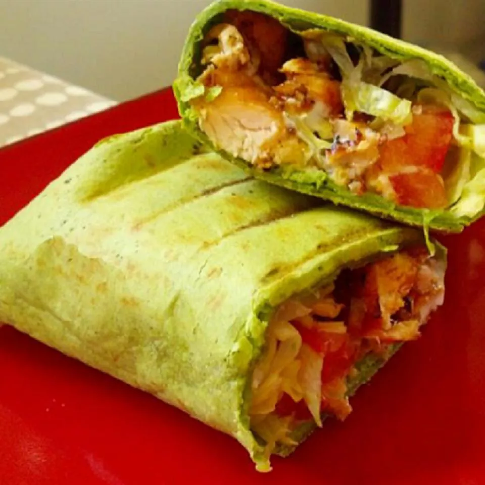

Home
ChickenWrap

Description
Sticky grilled chicken lathered in BBQ sauce combines with crispy bacon, tomato, lettuce, cheese, and ranch dressing, and then gets wrapped up in spinach-garlic-pesto tortillas for a serious upgrade on the standard chicken sandwich!
It is so yummyyy!
Ingredients
- 1 (16 ounce) package chicken tenders
- ¼ teaspoon seasoned salt
- ⅛ teaspoon ground black pepper
- ¼ cup BBQ sauce
- 4 slices cooked bacon
- 1 tomato, chopped
- 1 cup shredded lettuce
- ¼ cup ranch dressing
- 6 spinach-garlic-pesto tortillas
Steps
- Preheat an outdoor grill for medium-high heat and lightly oil the grate.
- Season chicken with seasoned salt and pepper. Grill chicken over direct heat until juices run clear, turning once or twice, 8 to 10 minutes. Move to an unheated part of the grill and lather with BBQ sauce; let stand until sauce becomes sticky, about 2 minutes. Transfer chicken to a cutting board and cut into bite-sized cubes.
- Divide chicken, bacon, tomato, lettuce, Colby cheese, and ranch among tortillas. Roll up tortillas and grill over direct heat, folded-side down, until cheese melts, about 1 minute per side. Cut wraps in half to serve.